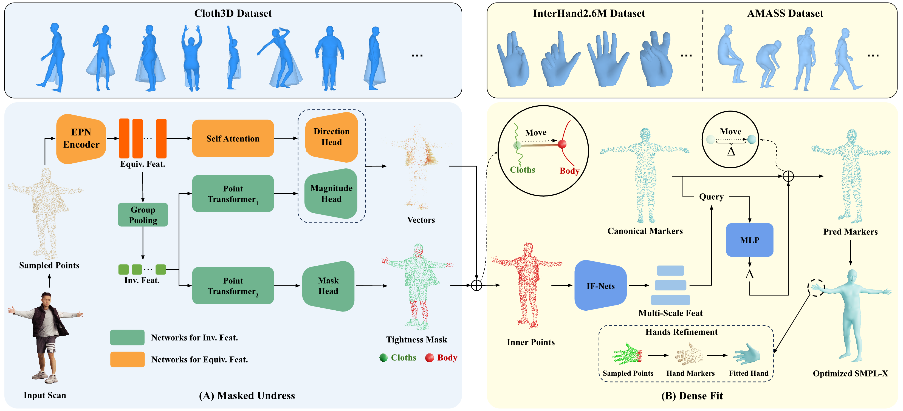

Human body fitting, which aligns parametric body models such as SMPL to raw 3D point clouds of clothed humans, serves as a crucial first step for downstream tasks like animation and texturing. An effective fitting method should be both locally expressive — capturing fine details such as hands and facial features — and globally robust to handle real-world challenges, including clothing dynamics, pose variations, and noisy or partial inputs. Existing approaches typically excel in only one aspect, lacking an all-in-one solution. We upgrade ETCH to ETCH-X, which leverages a tightness-aware fitting paradigm to filter out clothing dynamics ("undress"), extends expressiveness with SMPL-X, and replaces explicit sparse markers (which are highly sensitive to partial data) with implicit dense correspondences ("dense fit") for more robust and fine-grained body fitting. Our disentangled "undress" and "dense fit" modular stages enable separate and scalable training on composable synthetic data, including simulated garments such as CLOTH3D and large-scale pose libraries such as AMASS for body poses and InterHand2.6M for hand poses, improving outfit generalization and pose robustness, respectively. Our approach achieves robust and expressive fitting across diverse clothing, poses, and levels of input completeness, delivering a substantial performance improvement over ETCH on both (1) seen data, such as 4D-DRESS (MPJPE-All, 33.0%) and CAPE (V2V-Hands, 35.8%), and (2) unseen data, such as BEDLAM2.0 (MPJPE-All, 80.8%; V2V-All, 80.5%).

Two stages of ETCH-X: (A) Masked Undress, (B) Dense Fit. In the Masked Undress stage, we take a clothed scan as input and compute the undressed body. In the Dense Fit stage, we implicitly learns the deforming field, which deforms the canonical SMPL-X into a posed one. Thanks to the decoupled design, the robustness to dynamic clothing and pose variations could be improved with simulated garments, i.e., CLOTH3D, and pose libraries, i.e., AMASS for body poses and InterHand2.6M for hand poses, respectively.